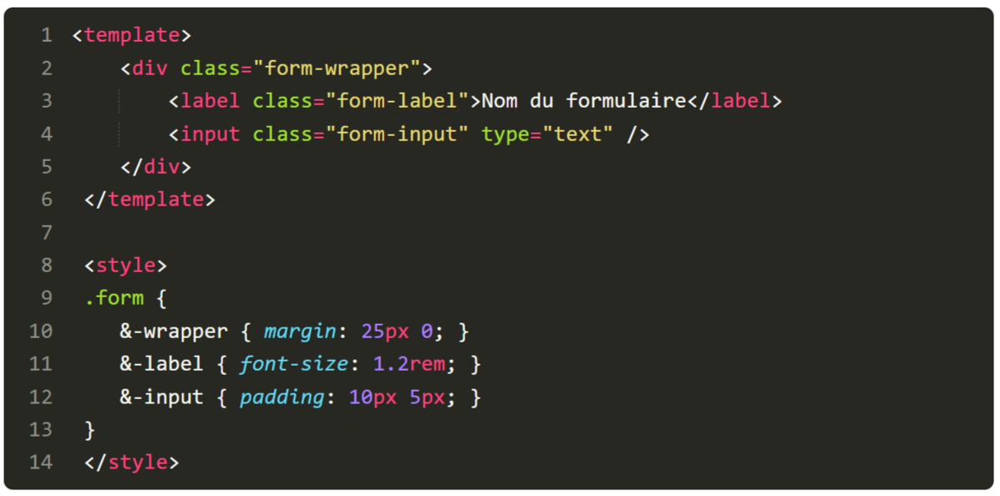

1 - Quelle directive pouvez-vous utiliser pour réaliser des boucles sur des éléments ?
v-for
v-bind
v-for
v-model
v-show
La directive
v-for
vous permet d'afficher des listes sous la forme d'un tableau ou d'un objet qui utilise une syntaxe similaire à la syntaxe
for ... in ...
en JavaScript.
2 - Vrai ou faux ? Vous pouvez créer une application Vue.js sans aucun outil de build.
Vrai
Faux
Bien que Vue.js dispose de ses propres outils de build pour les applications à plus grande échelle,
la manière la plus simple est d'utiliser le lien CDN pour Vue.
Un copier-coller et vous êtes prêt à créer une application complète !
3 - Quelle propriété de configuration est utilisée pour créer un data store réactif ?
el
data
computed
methods
La propriété data sur une instance de Vue vous permet de créer un data store réactif qui suit et met à jour l'utilisation de chaque propriété déclarée à l'intérieur.
4 - Si un utilisateur doit fréquemment afficher ou cacher un élément de la page,
quelle est la meilleure directive à utiliser ?
v-bind
v-for
v-model
v-show
v-if
La directive
v-show
permet de basculer la visibilité (toggle) d'un élément en CSS.
C'est plus performant que
v-if
, où tout l'élément HTML est détruit et recréé à chaque affichage et chaque destruction.
5 -Ici, le code de notre développeur rend des données statiques. Pourquoi ?
Il devrait utiliser la directive
v-bind
.
Il aurait dû préfixer les propriétés avec
@
.
Il devrait utiliser la boucle
v-for
.
Il devrait utiliser la directive
v-on
.
La directive
v-bind
vous permet de manipuler les propriétés HTML en précisant à Vue de l'interpréter comme du JavaScript plutôt que comme une chaîne de caractères statique.
6 -Ce code ne fonctionne pas comme prévu.
Quand l'utilisateur saisit du texte dans l'input, le data store ne se met pas à jour.
Qu'est-ce qui peut bien poser problème ici ?
Il aurait fallu utiliser la propriété
computed
.
Il faut utiliser une
méthode
pour récupérer la valeur de l'input..
La directive
v-model
a été oubliée sur l'input.
La directive
v-model
est la manière la plus courante de s'assurer que les éléments d'un formulaire sont reliés à la bonne propriété du data store.
Dans ce cas, ça devrait être
7 -Le code ci-dessous ne fonctionne pas comme prévu.
Qu'est-ce qui ne va pas avec ce code ?
Il doit utiliser la propriété
computed
.
La propriété
message
aurait dû être précédée de
this
.
Il n'y a pas de problème avec le code.
Lorsque vous souhaitez faire référence à une propriété dans l'instance Vue,
vous devez fournir un contexte avec
this
pour vous assurer qu'elle fait référence à l'instance Vue actuelle.
8 - Jetez un coup d'œil au code ci-dessous.
En supposant que le data store ne puisse pas être modifié,
quelle technique peut-on utiliser pour rendre le HTML plus propre ?
Créer une méthode qui génère le nom complet.
Créer une propriété calculée appelée
fullName
.
Utiliser la directive
v-for
pour faire une boucle dans le data store.
ULe code n'a pas besoin d'être modifié.
Les propriétés calculées sont un excellent moyen d'éviter un encombrement du HTML puisqu'elles vous permettent d'assembler dynamiquement des données,
tout en restant faciles à lire dans votre HTML.
Passez à la vitesse supérieure avec Vue CLI
Pour répondre aux questions, vous devrez cloner le repo GitHub avec le code nécessaire.
1 - Quels sont les avantages à utiliser Vue CLI pour créer des applications web ?
Attention, plusieurs réponses sont possibles.
Il permet d'utiliser très simplement Babel, TypeScript, ESLint, PostCSS, PWA, tests unitaires et tests end-to-end.
Il dispose d'un système de plugin permettant à la communauté de construire et de partager des solutions réutilisables pour des besoins communs.
Le code ES2015 natif peut être envoyé sans effort pour les navigateurs modernes.
Il permet d'utiliser des composants à fichier unique (*.vue).
Vue CLI est un outil puissant qui permet aux développeurs de construire des applications robustes qui évoluent tout en étant facilement maintenables.
2 - Le composant
Counter
ne s'affiche pas sur la page d'accueil.
Qu'est-ce qui peut bien se passer ici ?
Le composant n'a pas encore été importé.
Le composant n'a pas été enregistré.
Le composant n'a pas encore été créé.
Le composant n'a pas été exporté correctement.
Même si le composant
Counter
a bien été importé,
il doit encore être enregistré dans la propriété
components
pour être accessible dans le bloc
template
.
3 - Lorsqu'un utilisateur se connecte à la route
/login
,
la page apparaît vide. Qu'est-ce qui peut bien se passer ici ?
Il n'y a pas d'objet route pour
/login
dans
router.js
.
Le fichier
/views/Login.vue
n'est pas importé.
Il manque à
app.vue
l'élément
< router-view>
, qui permet à Vue Router de rendre correctement les itinéraires.
Il n'y a pas de fichier
/views/Login.vue
.
Pour que Vue Router puisse rendre une URL, celle-ci doit être correctement définie dans
router.js
.
4 -Parmi les hooks de cycle de vie suivants,
lequel est le plus pertinent pour lancer des méthodes asynchrones,
afin de récupérer des données depuis une API ?
beforeMount
mounted
beforeDestroy
destroyed
Lorsque vous récupérez des données à partir d'une API externe,
vous voulez prévoir le plus de temps possible pour éviter de faire attendre l'utilisateur trop longtemps.
Or, tous les autres hooks du cycle de vie se déclenchent après l'apparition du composant à l'écran,
ce qui augmenterait le temps d'attente perçu par l'utilisateur..
5 - L'application comporte actuellement les symboles de hachage
#
dans l'URL.
Que devez-vous faire pour que les URL apparaissent comme des URL normaux ?
e pas inclure le symbole
#
lorsque vous définissez href sur un lien.
Ajouter une propriété
standard
aux éléments d'ancrage.
Configurer le routeur Vue pour utiliser le mode historique HTML5.
Ajouter la prop
history
aux éléments
router-link
.
Par défaut, Vue Router utilise le mode
hash
pour s'assurer qu'il fonctionne sur tous les navigateurs,
quelle que soit la configuration du serveur.
Le mode historique HTML5 nécessite une configuration supplémentaire, que vous pouvez découvrir dans la documentation.
6 - L'application doit pouvoir rendre le nom d'un utilisateur sur la base de l'URL.
Mais ça ne fonctionne pas comme souhaité actuellement. Pourquoi ?
Vue Router est incapable de gérer des routes dynamiques.
Les paramètres doivent être définis dans des propriétés calculées.
La concordance dynamique des routes n'est pas utilisée.
Le composant nécessite une propriété dans Data spéciale pour permettre le routage dynamique.
La concordance dynamique des routes (dynamic route matching) permet à une application de cartographier des routes selon un modèle défini dans le routeur et indiqué par deux points
7 - Lorsque l'utilisateur clique sur le lien "À propos", cela déclenche un rafraîchissement de la page entière.
Quel élément du Vue Router devrait être utilisé à la place pour éviter ce comportement ?
< router-view>
< router-link>
< router-anchor>
< router-url>
Le
< router-link>
de Vue Router permet à l'utilisateur de naviguer en empêchant le rafraîchissement de la page entière.
Pour plus d'informations, consultez la documentation sur le router-link.
Créez des composants réutilisables avec Vue.js
1 - Si vous souhaitez passer des données à un composant enfant, quelle technique devez-vous utiliser ?
Propriétés calculées
Methods
Props
Data store
Les props sont des attributs personnalisés que vous pouvez enregistrer dans un composant afin qu'il puisse accéder à ces données.
Pour plus d'informations, vous pouvez consulter la documentation sur les props.
2 - Il y a actuellement un bug dans notre application.
Comme vous le voyez ci-dessous, un composant affiche différents types de données dans le message, tels que des arrays et des objets.
Quel est le meilleur moyen d'éviter ce genre de problème ?
Définir la propriété
required
dans la prop.
Définir le type de propriété avec une valeur
String
.
Définir une propriété
default
dans la prop.
Définir un nom de prop personnalisé qui indique aux autres développeurs de n'utiliser que des chaînes de caractères.
En définissant le
type
à
String
pour la
prop
,
cela permettra à Vue de protéger la
prop
contre la réception d'autres types de données, ce qui empêchera le bug de se produire.
3 - Un développeur essaie d'utiliser les techniques SCSS dans le bloc de code ci-dessous.

Qu’a-t-il mal fait ?
Il doit ajouter l'attribut
scss
au bloc
<.style>
.
Il doit ajouter l'attribut
lang="scss"
au bloc
<.style>
.
Il doit envelopper les styles dans un bloc
<.scss>
.
Il doit ajouter l'attribut
preprocessor="scss"
au bloc
<.style>
.
Les préprocesseurs peuvent être activés en ajoutant l'attribut
lang
avec le préprocesseur souhaité.
4 -Quelle méthode a permis de générer le CSS suivant ?
.nav-item[data-12vr93] { ... }
Global CSS
Scoped CSS
CSS Modules
Le Scoped CSS est une technique qui a été créée pour éviter la collision des sélecteurs CSS grâce à l'utilisation d'attributs data générés de manière dynamique.
5 - Lorsqu'un composant enfant doit transmettre des données à son parent, quelle technique est-il possible d'utiliser ?
Les props
Les événements personnalisés
Les slots
Les propriétés calculées
Les événements personnalisés vous permettent de définir un événement à écouter pour le composant parent.
6 - Quelle méthodologie a été utilisée pour générer le CSS suivant ?
.nav-item-vje2901e { ... }
Global CSS
Scoped CSS
Modules CSS
Les modules CSS sont une technique qui ajoute un hachage unique généré dynamiquement pour minimiser les collisions CSS et les effets secondaires.
7 - Lorsque vous définissez un événement personnalisé, outre le nom de l'événement, quel autre paramètre pouvez-vous également définir ?.
Le type
Un payload
Required
Des variations de noms
En plus de pouvoir faire écouter un événement aux éléments parents, les composants enfants peuvent transmettre des données avec l'événement par le biais d'un payload.
8 - Quels sont les avantages des slots ?.
Attention, plusieurs réponses sont possibles.
Ça donne accès à une API flexible permettant aux développeurs de placer du contenu.
Ils permettent de créer différentes configurations sans avoir à fournir plusieurs props.
Ça permet aux développeurs de désigner l'endroit où leur contenu apparaîtra de manière intuitive avec des emplacements nommés.
Les slots garantissent que tout le contenu fourni entre les balises d'ouverture et de fermeture d'un modèle est supprimé.
Les slots sont une technique puissante qui vous permet de définir des zones dans votre composant qui peuvent accepter du contenu de manière flexible.
Gérez les données de votre application
1 - Pourquoi la gestion d'état (state management) est-elle importante ?
Attention, plusieurs réponses sont possibles.
La synchronisation des données d'une application peut devenir trop complexe à mesure qu'une application se développe et s'étend.
Cela nous permet de créer une source unique de vérité pour les données de notre application.
Elle garantit que toutes les copies de données sont indépendantes les unes des autres.
Les composants de notre application doivent pouvoir accéder aux données et les mettre à jour, quel que soit leur emplacement dans la codebase.
Il est difficile de synchroniser les données à mesure qu'une application se développe et prend de l'ampleur. Les modèles de gestion d'état tels que Vuex sont essentiels pour réussir à construire une application à plus grande échelle.
La réussite de la gestion d'un state est très souvent liée au respect du principe de source unique de vérité.
2 - Quelle partie de Vuex est chargée d'apporter directement des modifications au data store ?
Le state
Les getters
Les actions
Les mutations
Les mutations sont la seule façon d'apporter des changements au store Vuex.
3 - Quelle partie de Vuex est responsable de la gestion des données dans le store ?
Le state
Les getters
Les actions
Les mutations
Vuex utilise le state comme data store, ce qui est analogue à la propriété
data
que nous utilisons dans les instances de Vue.
4 -Quelle partie de Vuex est responsable de la gestion de la logique qui peut déclencher des changements dans le data store ?
Le state
Les getters
Les actions
Les mutations
Comme la seule responsabilité d'une mutation est la mise à jour du store,
la responsabilité des actions est de gérer la logique et de déclencher les appels asynchrones,
ce qui peut déclencher autant de mutations que nécessaire.
5 - Quel est le mot clé pour déclencher une mutation ?
trigger
commit
initiate
call
Le mot clé
commit
permet d'appeler des mutations.
6 - Actuellement, un développeur utilise les getters de la manière suivante :
Qu’est-ce qui est incorrect ?
Les getters ne doivent être utilisés que pour les fonctions asynchrones.
Les getters sont destinés à être utilisés comme des propriétés calculées plutôt que de simplement récupérer un état,
puisque l'on peut y accéder directement par des méthodes comme mapState.
Les getters doivent être utilisés pour faire muter l'état.
Il n'y a pas de problème avec ce code.
Les getters sont utilisés pour calculer l'état dérivé sur la base de l'état actuel du store.
Les exemples comprennent le filtrage d'une liste d'articles ou le renvoi de la longueur de la liste.
SI vous voulez en apprendre plus, vous pouvez jeter un œil à la documentation officielle des getters (ou accesseurs, en français).
7 - Un développeur essaie de débugger le code suivant :
Attention, plusieurs réponses sont possibles.
Les mutations sont des transactions synchrones.
Les mutations ne peuvent pas contenir de code asynchrone comme la récupération de données à partir d'une API.
Elles doivent utiliser une
action
pour récupérer les données et ensuite acter une mutation avec
commit
qui met à jour l'état.
Elles doivent utiliser des getters à la place des mutations.
8 - Quelle est la syntaxe la plus courante pour accéder aux actions d'un store Vuex dans un composant ?
...generateActions()
...listActions()
...mapActions()
...getActions()
Bien que vous puissiez accéder aux actions de Vuex via
this.$store.dispatch
,
il est plus courant d'utiliser
map
pour définir les propriétés que vous souhaitez voir disponibles dans Vue.